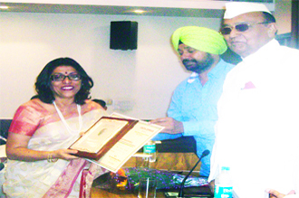
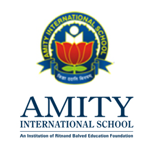
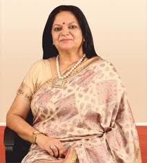

ABOUT US



Mrs. Renu Singh(Principal of Amity Noida, left) Amity's logo(center) Dr. Amita Chauhan(Chairperson, right)
Amity International School, Noida, is one of the top most progressive schools in the National Capital Region.
It has made its mark through its tremendous achievements both in scholastic and co scholastic domains.
Affiliated to the Central Board of Secondary Education, New Delhi, it was established by the Ritnand Balved Education Foundation that spearheads the activities of the AKC Group of Companies in the field of education. The school owes its inception to the profound vision of its Founder, Dr Ashok K. Chauhan and its Chairperson Dr (Mrs) Amita Chauhan. Their dynamic educational philosophy and passion for providing quality education, in order to make India a super power by 2030, is responsible for this novel project for developing human capital.